去中国婚博会官网注册会员：http://hz.jiehun.com.cn/
注册会员
开通后台管理权限
通过注册的会员账号去对应的QQ群里面找到对应的负责人，然后通过该负责人去开通后台管理权限(一般找武汉设计部负责人王恋) 金海总动员：70995189(公司总群) 各地区QQ群：xxxxxxxx(问同事或人事) 中国婚博会前端群：348698251(有前端方面问题的疑惑在这里提问)
登陆后台管理系统
登陆后台管理系统：http://gl.tthunbohui.com/，输入之前在官网注册的账号： 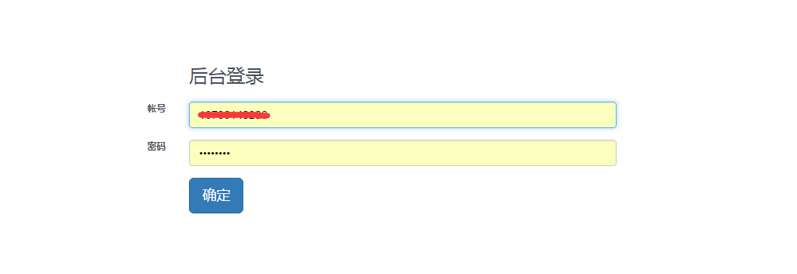
进入后台管理系统
(1)点击红色框"页面"-->"专题管理"
 (2)补充：在这个页面里面，右边有一个“新版排期表”，这里有全国其他城市所有要做的页面和具体设计人、对接人、前端制作人员等信息，前端这块具体要做哪些页面，也都是以这个排期表为主，如果要你做排期表上没有的页面，那一定要跟设计人员确认之后，让他把你的排期写上去，之后在开始制作页面。
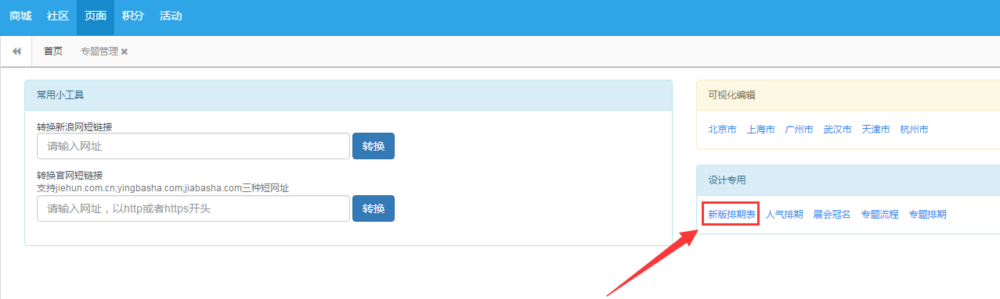
(2)补充：在这个页面里面，右边有一个“新版排期表”，这里有全国其他城市所有要做的页面和具体设计人、对接人、前端制作人员等信息，前端这块具体要做哪些页面，也都是以这个排期表为主，如果要你做排期表上没有的页面，那一定要跟设计人员确认之后，让他把你的排期写上去，之后在开始制作页面。
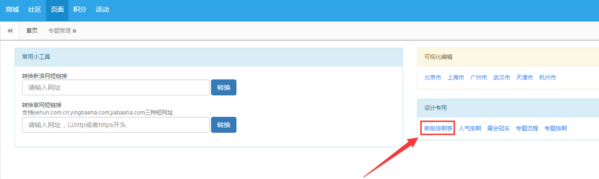

进入专题页面
恭喜你，你已经成功进入后台管理模块，在这些模块里面你不仅可以看到你所在城市前端小伙伴写的专题页面，还可以通过切换城市去查看其他城市小伙伴写的页面，所有的页面都会在这个后台管理模块里面可以找到。 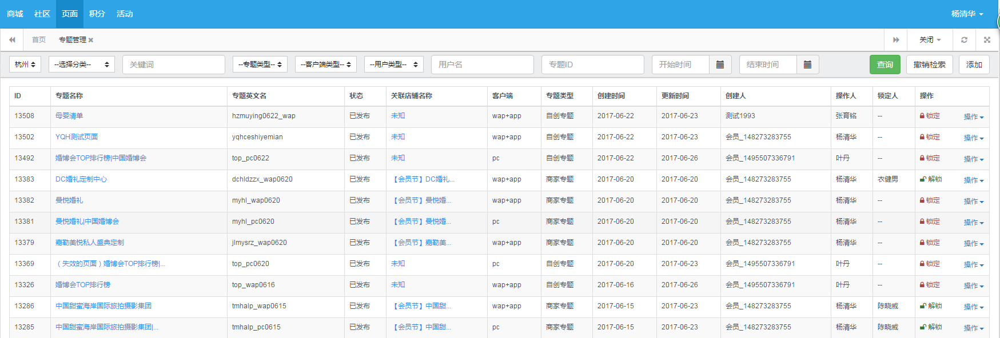
后台操作(查询)
点击“查询”按钮可以查看到所有前端小伙伴做的web页面，比如城市查询、分类查询、关键字查询、专题类型等一系列查询，注意后面的“专题ID”查询；前端做好的页面放入后台后都会自动生成一个专属ID号：比如 http://hz.jiehun.com.cn/zhuanti/huiyuanjie_pc/zt_hz_hyjtbh_pc_0314_11276/（最后的11276就可以放入“专题ID”里面去查找，速度最快最精准），平时在修改你自己或之前其他人做的页面bug时，也都是通过这个专属ID号去对应的城市查找页面。 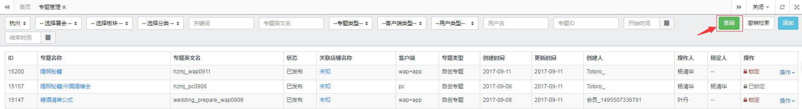
查找特定类型的专题页面
在查找特定类型的专题页面的时候，我们可能需要参考专题分类。如下，专题主要服务于展会，展会包括：婚博会、家装展、母婴展和其它。展会下有商城和索票等板块，再下一级就是各种细分类别。专题页面主要集中在商城和索票板块。
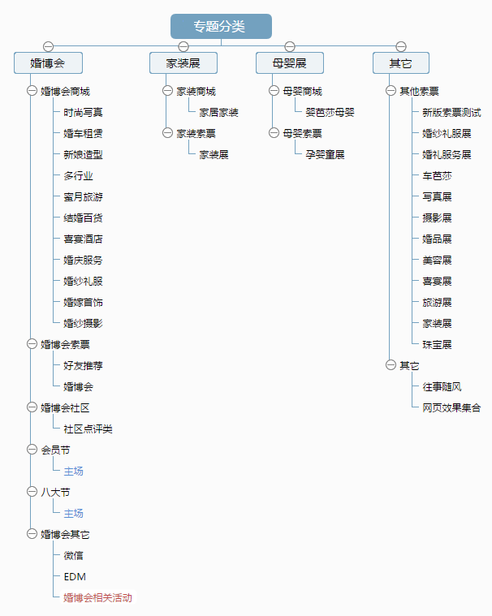添加专题页面的时候，需要填写的相关参数中，展会类型那一栏对应的就是专题分类。(单击图片放大)
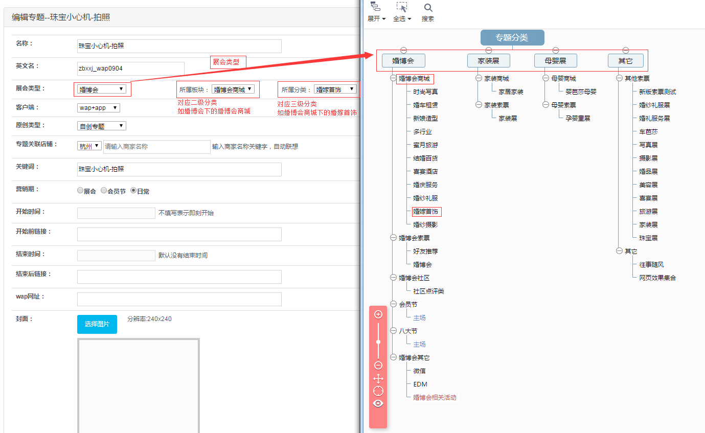
X
检索应用示例：
比如我们想要找好友推荐的相关专题页，查看结构我们发现好友推荐是婚博会索票的子类，婚博会索票又是婚博会的子类。于是我们可以在专题管理页面选择：婚博会 → 婚博会索票 → 好友推荐，然后点击查询按钮得到以下结果。
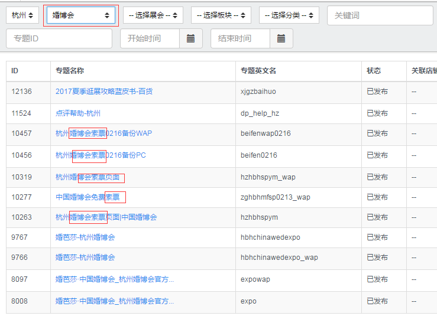后台操作(添加)
【第一步】点击“添加”按钮就表示你要把你写好的页面代码放入后台模板了，不过千万记住在点击添加之前注意你的页面归属于那个城市。 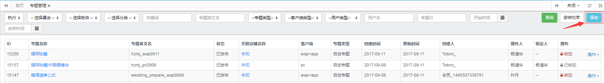 (下图为点击“添加”按钮后的显示页面，如果图片看不清楚在发送的“前端模版文件”里面有大图) 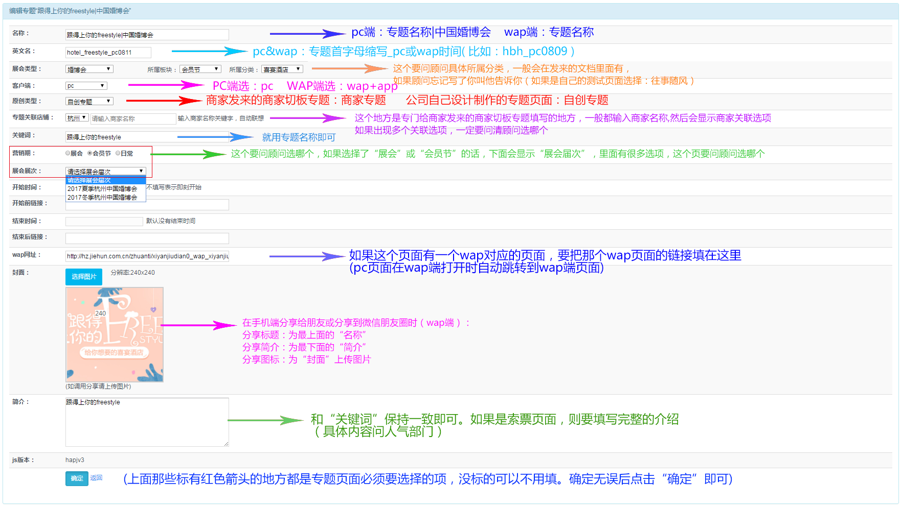 【第二步】确认自己添加的是“自创专题”类型还是“商家专题”类型，以下分别给出这两类pc端的实例。 （图1：自创专题） 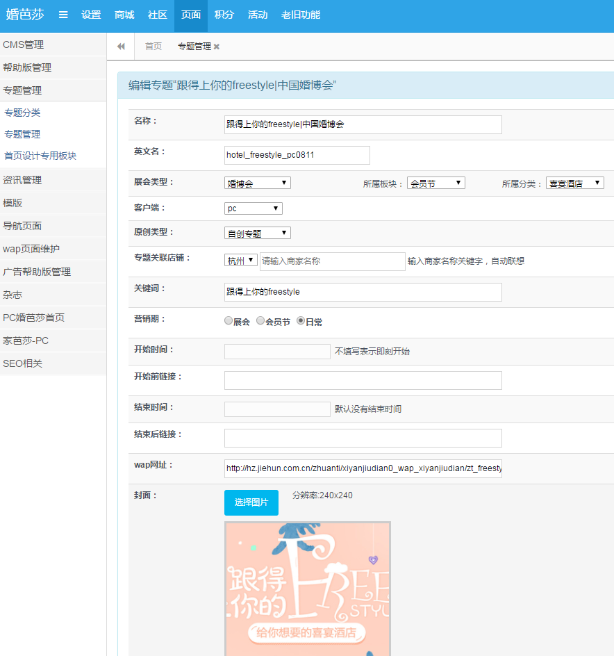 （图2：商家专题） 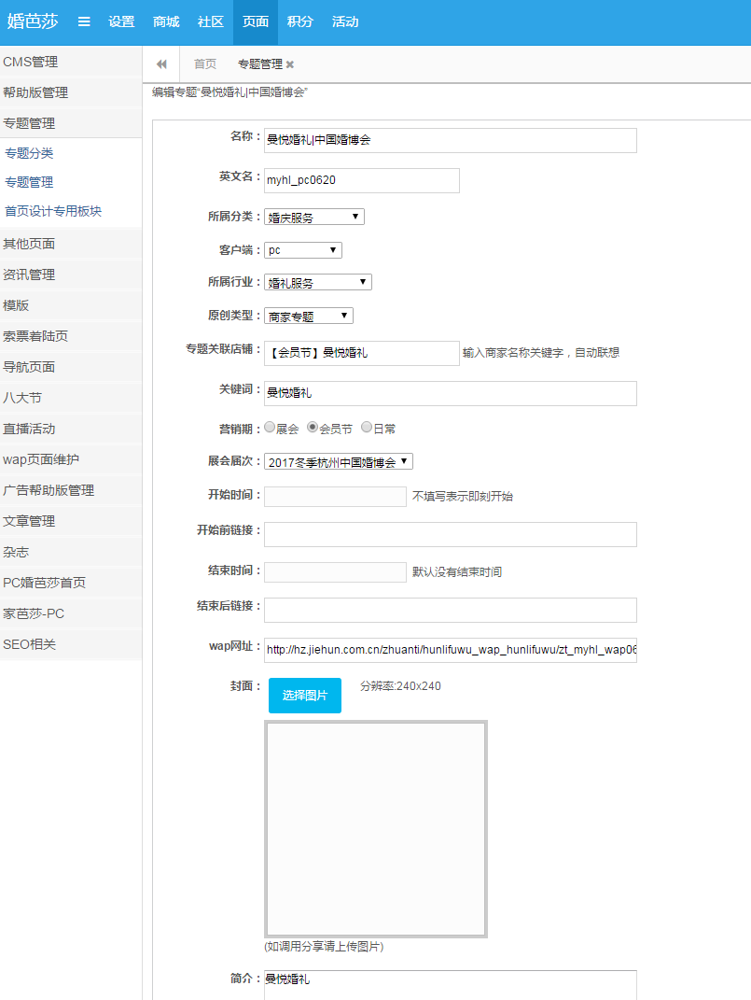 【第三步】内容填写无误后点击"确定"，这样页面就会跳转回首页，在模块的最上面就可以看到你添加成功的页面，点击你的“专题名称”便可以在线上进行访问了。
后台操作(本地项目投放)
添加完成后可以在后台看到你添加的页面，最后面有“锁定”和“操作”按钮。“锁定”按钮顾名思义就是在你的页面还没有完成或还需要修改时，不想让其他人员接触里面的代码，所以可以点击“锁定”进行封锁代码;同理，如果你需要修改已经被锁定的专题页面，必须在QQ群里面先找到锁定人，叫他解锁之后才能继续操作。 “操作”按钮可以将自己本地的项目投放到后台生成向上的项目，下面的内容也主要说明工作中关于如何投放本地项目、如何编辑以生成专题页面信息、如何进入编辑模式做出详细说明。 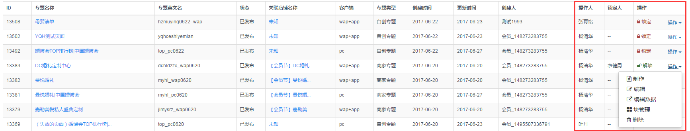
【制作】：把你在本地写好的页面代码放入后台模板里面，不过他是分类型放入，直接看下面的图片。他分为头部选项和内容、样式、脚本、图片、结束内容这5项。
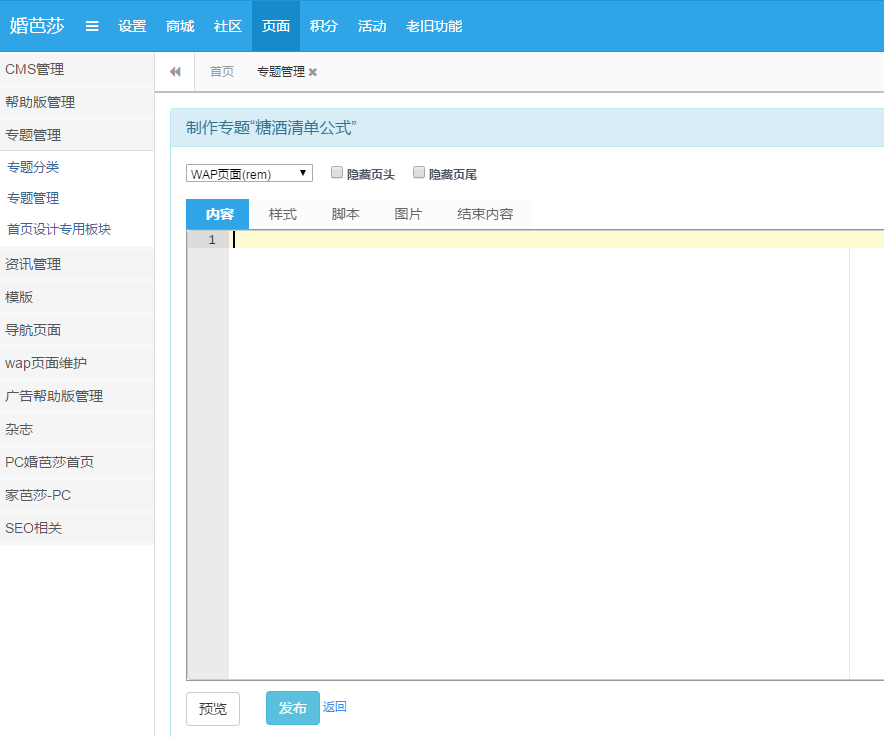
（1）首先选择PC还是wap端，pc端就是“默认”选项，wap端可以选择“WAP页面(rem)和“WAP页面（rem-750）；他们分别对应640的设计稿和750的设计稿。
（2）"隐藏页头"和“隐藏页尾”：其实我们写的页面都会植入到中国婚博会官网里面，你联想JD的官网就知道了，JD的官网也有固定的头部和尾部，选择隐藏后，你的页面将不会显示官网的头部和尾部，也就是你本地项目什么样，线上生成页面就什么样，但一般情况下我们还是要这个头部和尾部的。
 （3）本地代码按分类投放到后台框架。
“内容”区域放你本地代码的body里面的所有内容
“样式”区域放你的css样式(不支持less和sass等其他编译语言)
“脚本”区域放你的js代码
“图片”区域就是把你本地的图片变成线上的
“结束内容”区域，你暂时不用管
（4）上面的都搞完后点击下"浏览"看下，防止出BUG，如果没有问题，就直接点击发布，他会跳转回主页面。
（3）本地代码按分类投放到后台框架。
“内容”区域放你本地代码的body里面的所有内容
“样式”区域放你的css样式(不支持less和sass等其他编译语言)
“脚本”区域放你的js代码
“图片”区域就是把你本地的图片变成线上的
“结束内容”区域，你暂时不用管
（4）上面的都搞完后点击下"浏览"看下，防止出BUG，如果没有问题，就直接点击发布，他会跳转回主页面。
【编辑】：就是你在添加后台模块的时候，发现你有个地方写错了，比如页面类型，忘记填写wap链接了等，这个时候你就可以点击编辑进去里面重新修改。
【编辑数据】：也叫“可编辑模式”这个是顾问填写资料用的，你写完页面后也要点进去看下，因为在编辑模式下，尽管线上是好的，但编辑模式有可能样式会出问题，这样导致顾问填写资料时因为页面错乱等无法编辑数据。（只要线上ok，只是编辑模式下页面样式可能出了问题，但不影响顾问去填写资料，那就不用管，反正用户看的是线上的页面，不过你在做完一个页面后，也一定要点进去看下，不然在编辑模式下顾问填写不了资料的话，他会来找你）。 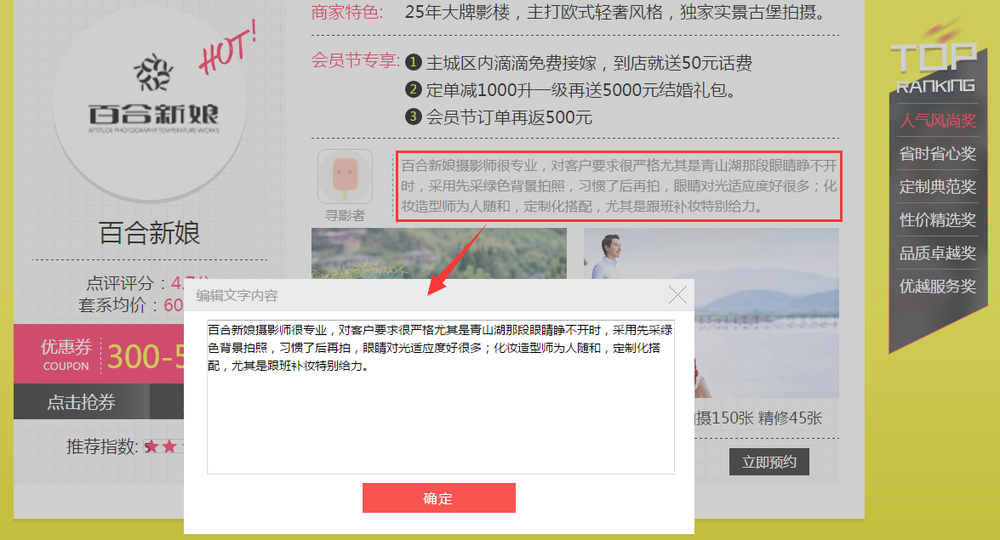 （如上图所示：在可编辑模式下，顾问可以随意填写他们想要的文字内容，或者a链接的href值，以及更换图片等，这样在顾问点击确定和保存修改按钮之后，线上的资料也会跟着改变）
【块管理】：你暂时不用管 【删除】：需要权限，你只要把这个需要删除的页面自己锁住就可以了。